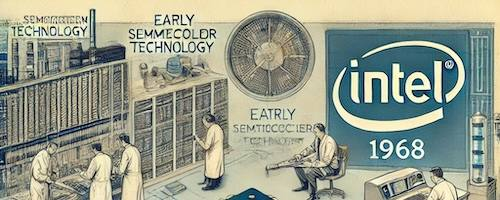
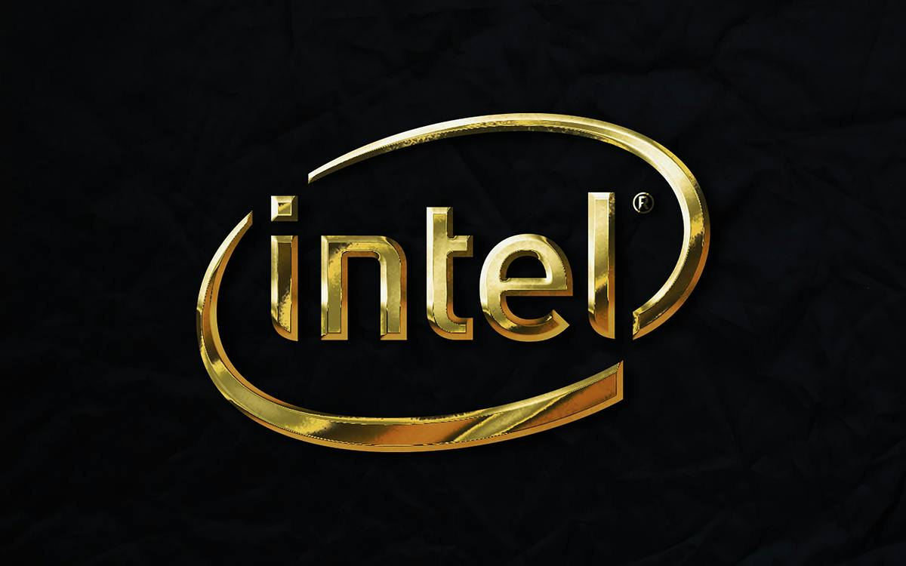
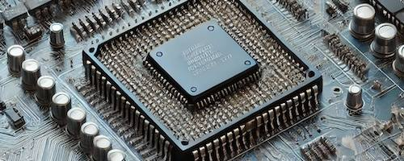
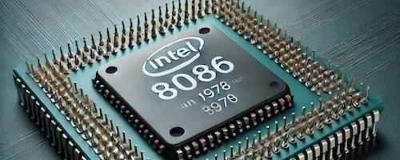
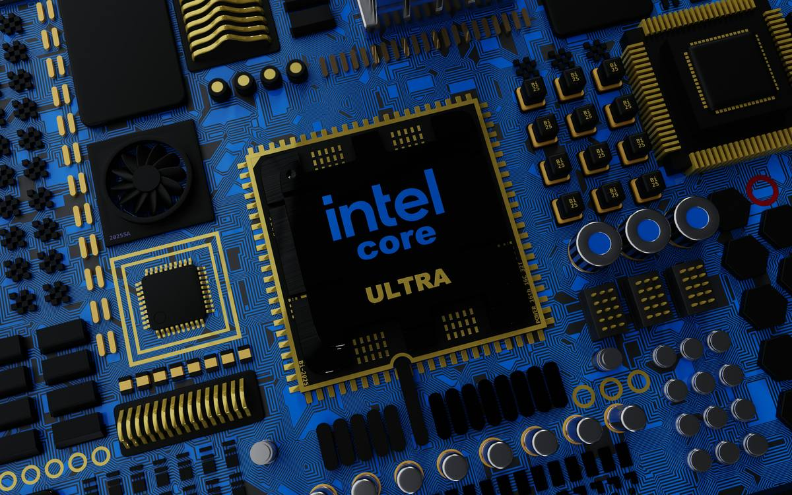
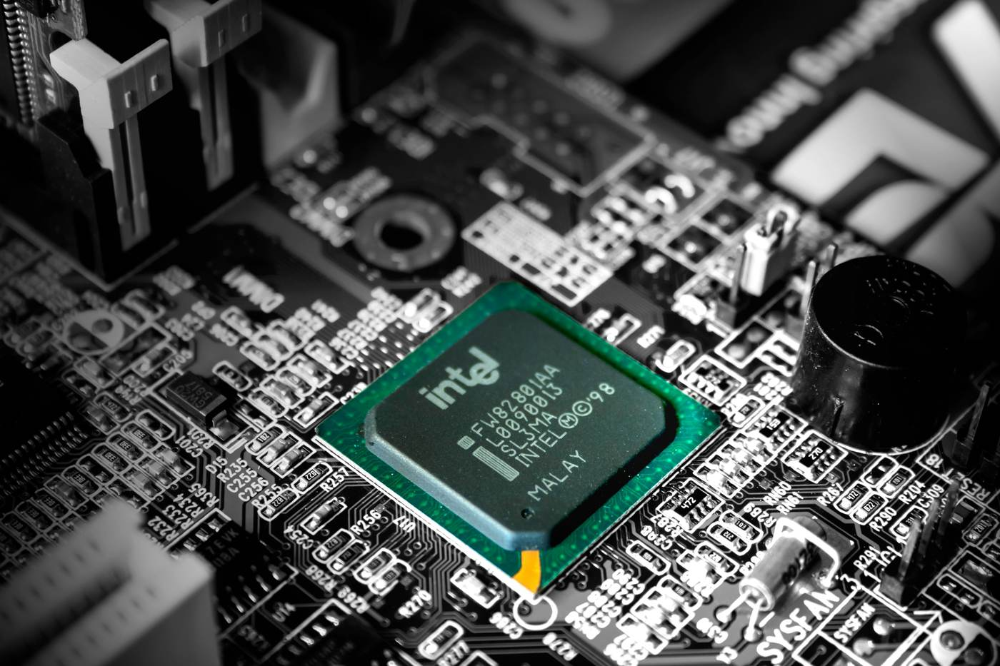
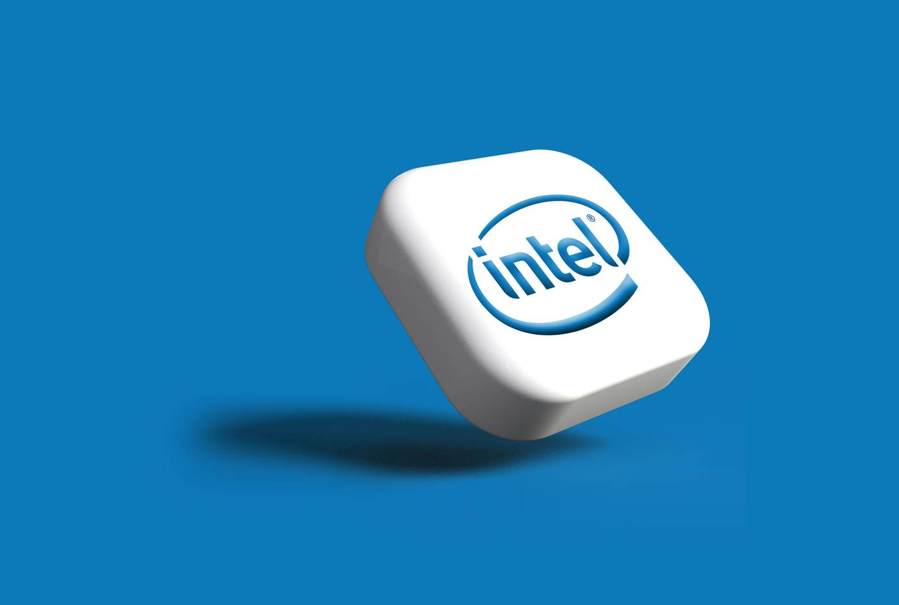
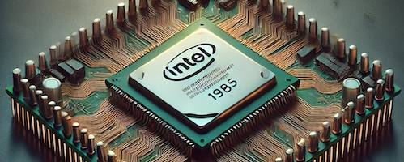

1968
Intel Founded
Robert Noyce and Gordon Moore rename the newly formed company NM Electronics to Intel Corporation, laying the foundation for decades of technological innovation.
View milestone
Intel sustainability journey
Explore Intel's journey through time, discovering how our commitment to innovation has shaped a more sustainable future for technology and our planet.
Scroll to explore
Milestones

Robert Noyce and Gordon Moore rename the newly formed company NM Electronics to Intel Corporation, laying the foundation for decades of technological innovation.
View milestone

Intel debuts the 4004, the world's first commercial microprocessor, igniting the microprocessor revolution and propelling the future of computing devices.
View milestone

Launch of the 8086 processor, establishing the x86 architecture that drives countless PCs and servers in the modern era.
View milestone

Intel introduces the 386 processor with 32-bit architecture, ushering in a new era of performance and multitasking for personal computers.
View milestone

This year marks Intel's highest annual greenhouse gas emissions for operations. Over subsequent years, Intel invests heavily in chemical abatement, renewable energy, and energy-efficient manufacturing to reverse this trend.
View milestone

Intel launches its RISE (Responsible, Inclusive, Sustainable, Enabling) strategy and 2030 goals, aiming to drive industry-wide progress on climate action, water stewardship, and waste reduction.
View milestone

Intel announces its commitment to achieve net-zero greenhouse gas emissions (Scope 1 and 2) across its global operations by 2040, building on years of environmental initiatives.
View milestone

The company achieves 99% renewable electricity usage worldwide, helping to drastically lower carbon emissions and driving progress toward Intel's long-term sustainability goals.
View milestone
Intel hosts its first Sustainability Summit, uniting suppliers, government officials, and industry leaders to collaborate on next-generation sustainable semiconductor manufacturing.
View milestone
Under its RISE (Responsible, Inclusive, Sustainable, Enabling) strategy, Intel sets ambitious 2030 goals, including driving industry-wide progress on climate action, water stewardship, and waste reduction.
Learn MoreIn 2022, Intel pledged to achieve net-zero greenhouse gas emissions (Scope 1 and 2) by 2040. This commitment builds on decades of environmental initiatives and partnerships across the semiconductor industry.
Learn MoreIntel conserves billions of gallons of water annually and collaborates with local communities to restore watersheds. Intel also upcycles and recycles materials to reduce waste and advance a circular economy.
Learn MoreGet updates on Intel's sustainability progress.